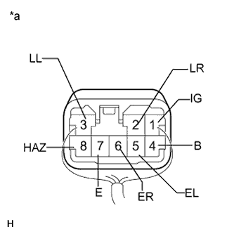

TURN SIGNAL FLASHER ASSEMBLY > ON-VEHICLE INSPECTION |
| 1. CHECK TURN SIGNAL FLASHER ASSEMBLY |
|  |
Measure the resistance according to the value(s) in the table below.
| Tester Connection | Condition | Specified Condition |
| 5 (EL) - Body ground | Always | Below 1 Ω |
Measure the voltage according to the value(s) in the table below.
| Tester Connection | Condition | Specified Condition |
| 2 (LR) - 7 (E) | Hazard warning switch off | Below 1 V |
| Hazard warning switch on | Alternating between 11 to 14 V and below 1 V (60 to 120 times per minute) | |
| 3 (LL) - 7 (E) | Hazard warning switch off | Below 1 V |
| Hazard warning switch on | Alternating between 11 to 14 V and below 1 V (60 to 120 times per minute) | |
| 4 (B) - 7 (E) | Always | 11 to 14 V |
| 5 (EL) - 7 (E) | Engine switch ON Headlight dimmer switch (turn left) off | 9 V or higher |
| Engine switch ON Headlight dimmer switch (turn left) on | Below 1 V | |
| 6 (ER) - 7 (E) | Engine switch ON Headlight dimmer switch (turn right) off | 9 V or higher |
| Engine switch ON Headlight dimmer switch (turn right) on | Below 1 V | |
| 8 (HAZ) - 7 (E) | Hazard warning switch off | 9 V or higher |
| Hazard warning switch on | Below 1 V |
| *a | Front view of wire harness connector (to Turn Signal Flasher Assembly) |